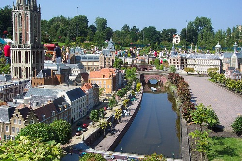
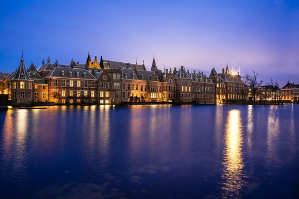

The Hague
Madurodam
Madurodam is a tourist destination and miniature park located in The Hague's Scheveningen neighborhood. A variety of 1:25 scale model copies of well-known Dutch landmarks, historic cities, and expansive projects may be found there.
Binnenhof
A collection of structures in the heart of The Hague, Netherlands, is known as the Binnenhof and Buitenhof. It is home to the Netherlands' prime minister's office, the Ministry of General Affairs, and the meeting room for both houses of the States General.
